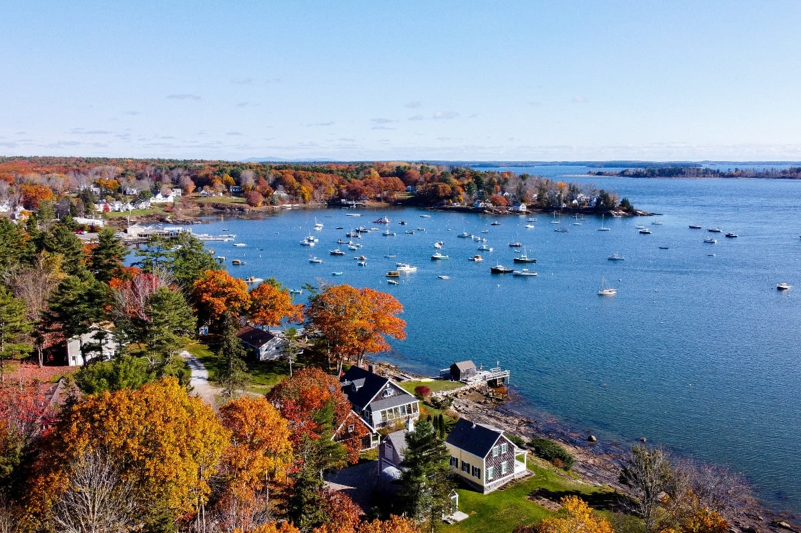
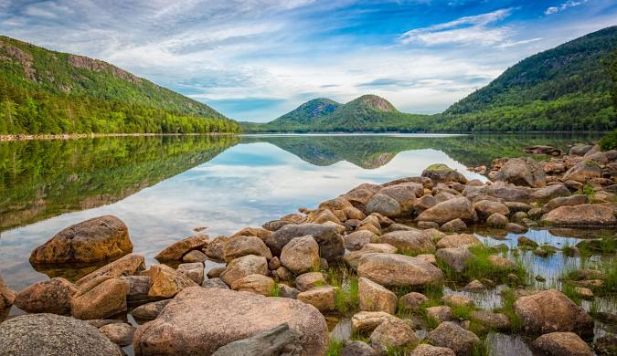
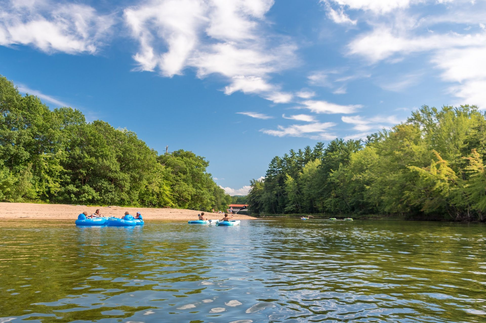
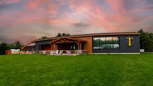
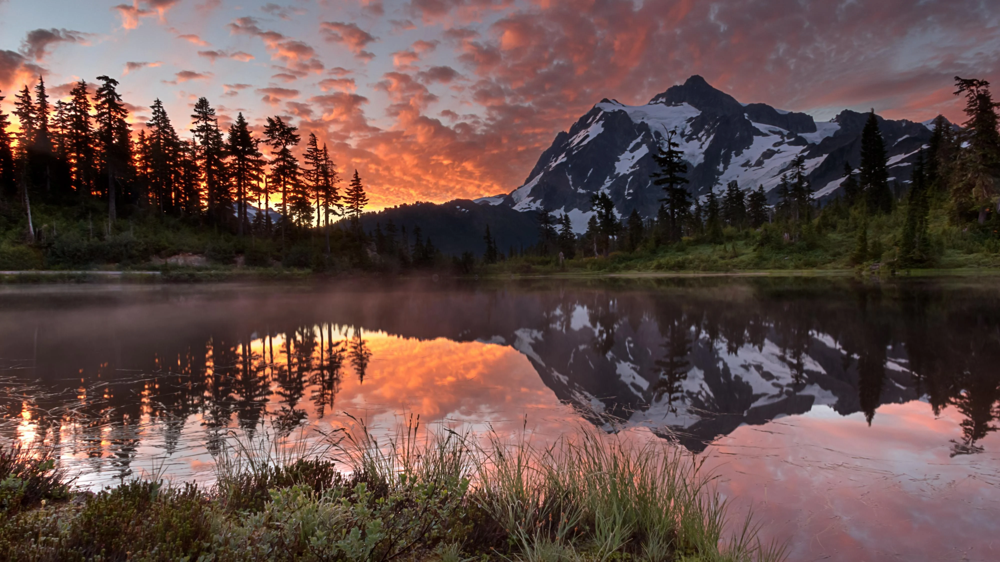
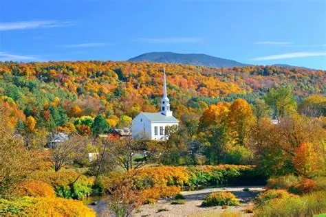
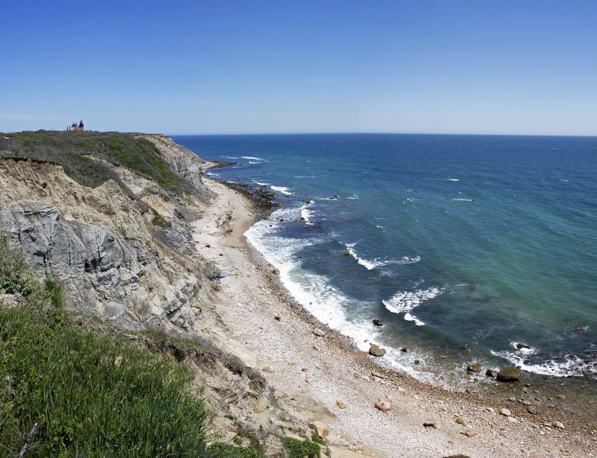

Your New England Journey
Boston (Oct 11-12)
Top Attractions

Daily Itinerary
Sat, Oct 11
- Arrive 10am, get settled at hotel (e.g., The Godfrey Hotel or Marriott Copley Place)
- Walk the Freedom Trail (start at Boston Common, end at Faneuil Hall)
- Explore Beacon Hill & Boston Common
- Dinner in North End: Giacomo's or Mamma Maria (Italian)
- Optional: Mike's Pastry for dessert
Sun, Oct 12
- Morning: Fenway Park tour or stroll Charles River Esplanade
- Brunch at Tatte Bakery or The Friendly Toast
- Afternoon: Museum of Fine Arts or shopping on Newbury Street
- Optional: Boston Harbor cruise
- Dinner: Neptune Oyster or Legal Sea Foods (seafood)
🍽️ Restaurant Recommendations
Fine Dining
- Mamma Maria - Italian, North End
- Neptune Oyster - Seafood, North End
- Legal Sea Foods - Classic Boston seafood
Casual Dining
- Giacomo's - Italian, cash only
- Tatte Bakery - Brunch & coffee
- The Friendly Toast - Creative brunch
Quick Bites
- Mike's Pastry - Famous cannoli
- Faneuil Hall Food Court - Variety
- Boston Public Market - Local vendors
Salem (Oct 13)
Top Attractions
Daily Itinerary
Mon, Oct 13
- Drive to Salem (~45 min)
- Salem Witch Museum, The Witch House, Peabody Essex Museum
- Lunch at Turner's Seafood
- Explore Essex Street Pedestrian Mall
- Optional: Evening ghost tour
- Overnight in Salem or nearby coastal town (e.g., The Hotel Salem)
🍽️ Restaurant Recommendations
Local Favorites
- Turner's Seafood - Fresh seafood
- The Tavern on the Green - American fare
- Bambolina - Wood-fired pizza
Themed Dining
- The Witch House Restaurant - Historic setting
- Ugly Mug Diner - Classic diner
- Gulu-Gulu Cafe - Coffee & light meals
Coast of Maine (Oct 14)
Top Attractions

Kennebunkport, ME
Charming coastal town with Dock Square and Ocean Avenue views.
Daily Itinerary
Tue, Oct 14
- Leisurely morning departure from Salem
- Stop in Epping
- Continue to Portsmouth, NH (~30 min) - explore historic downtown
- Continue to York, Maine (~30 min) - visit York Beach or Nubble Lighthouse
- Continue to Kennebunkport (~30 min) - stroll Dock Square
- Lunch in Kennebunkport
- Drive to Portland (~45 min) - quick exploration of Old Port district
- Continue north toward Acadia area (~2.5 hrs)
- Overnight near Acadia National Park (Bar Harbor or Ellsworth area)
🍽️ Restaurant Recommendations
Maine Seafood
- The Clam Shack - Kennebunkport lobster rolls
- Holy Donut - Portland potato donuts
- Duckfat - Portland, Belgian fries
Coastal Dining
- Goldenrod - York Beach saltwater taffy
- Portsmouth Brewery - Local craft beer
- Black Trumpet - Portsmouth farm-to-table
Acadia National Park (Oct 15)
Top Attractions

Jordan Pond
Crystal clear lake with iconic Bubble Mountains backdrop.
Daily Itinerary
Wed, Oct 15
- Early morning: Drive into Acadia National Park
- Sunrise at Cadillac Mountain (first US sunrise)
- Jordan Pond Path - easy loop with mountain views
- Lunch at Jordan Pond House (famous popovers)
- Afternoon: Ocean Path to Thunder Hole
- Bar Harbor village - shops and waterfront
- Dinner in Bar Harbor
- Evening departure toward White Mountains area
🍽️ Restaurant Recommendations
Bar Harbor Dining
- Jordan Pond House - Famous popovers
- Stewman's Lobster Pound - Fresh lobster
- Cafe This Way - Creative breakfast
Local Favorites
- Thirsty Whale Tavern - Pub fare
- McKay's Public House - Upscale dining
- Bar Harbor Brewing - Local brewery
White Mountains, NH (Oct 16)
Top Attractions

Saco River Activities
Kayaking, canoeing, or tubing on the scenic Saco River.

Tuckerman Brewing Company
Local brewery with beer flights and live music in North Conway.
Daily Itinerary
Thu, Oct 16
- Morning departure from Acadia area with breakfast to-go
- Drive to White Mountains - Saco River Outfitter (Conway, NH) (~3 hrs)
- Kayak/canoe on Saco River (3-5 miles) with peak foliage views
- Lunch in North Conway - Table + Tonic or Big Dave's Bagels
- Sabbaday Falls - easy walk to beautiful waterfall
- Cathedral Ledge Drive-Up for scenic mountain views
- Tuckerman Brewing Company - beer flight & live music
- Check into North Conway lodge
- Dinner: Moat Mountain Smokehouse or Flatbread Company
🍽️ Restaurant Recommendations
North Conway
- Moat Mountain Smokehouse - BBQ & brewery
- Flatbread Company - Wood-fired pizza
- Table + Tonic - Organic cafe
Quick Options
- Big Dave's Bagels - Breakfast & lunch
- Tuckerman Brewing - Beer flights
- Local Grocer Cafe - Sandwiches
Mount Washington, NH (Oct 17)
Top Attractions

Mount Washington
Conquer the highest peak in the Northeast via Tuckerman Ravine Trail.
Daily Itinerary
Fri, Oct 17
- 7am: Early start for Mt. Washington hike
- Tuckerman Ravine Trail (8.4 miles, 6-8 hours)
- Post-hike lunch in Gorham or Jackson
- Afternoon: Relax and recover from hike
- Evening: Dinner in North Conway
- Overnight in New Hampshire
🍽️ Restaurant Recommendations
Post-Hike Recovery
- Muddy Moose - Hearty portions, North Conway
- Scottish Lion - Pub food, North Conway
- Thompson House Eatery - Jackson comfort food
Healthy Options
- May Kelly's Cottage - Irish pub, North Conway
- Delaney's Hole in the Wall - Local favorite
- Stonehurst Manor - Upscale dining
Vermont ➡️ Connecticut ➡️ Rhode Island ➡️ Boston (Oct 18)
Scenic Drive Highlights

Vermont Scenic Drive
Beautiful fall foliage route through Crawford Notch to Woodstock/Stowe.

Litchfield Hills, CT
Beautiful countryside drive through Connecticut's scenic hills.

Rhode Island Coastline
Optional stops in Newport or Providence for coastal views.
Daily Itinerary
Sat, Oct 18
- 8am: Depart Vermont early
- Drive through Connecticut's Litchfield Hills (~2 hrs)
- Continue through Rhode Island (~2 hrs)
- Optional: Quick stop in Newport or Providence
- Evening: Arrive in Boston (~1.5 hrs from RI)
- Dinner: North End Italian or quiet meal near airport
- Overnight near Boston Logan Airport
🍽️ Restaurant Recommendations
Road Trip Stops
- Vermont Country Stores - Local specialties
- Cold Hollow Cider Mill - Fresh cider donuts
- Cabot Cheese Store - Vermont cheese
Final Boston Meal
- Regina Pizzeria - North End classic
- Union Oyster House - Historic seafood
- Modern Pastry - Italian desserts
Departure Day (Oct 19)
Sun, Oct 19
- Early morning: Final preparations at Boston Logan Airport hotel
- 9:00 AM: Flight departure
- Depart with a camera full of New England foliage and memories!